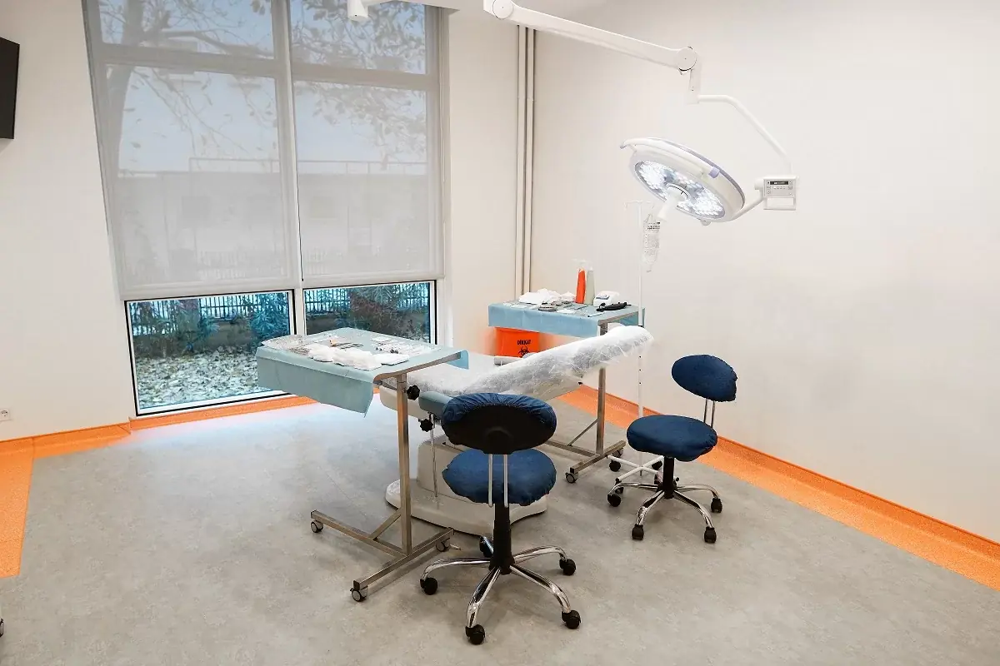
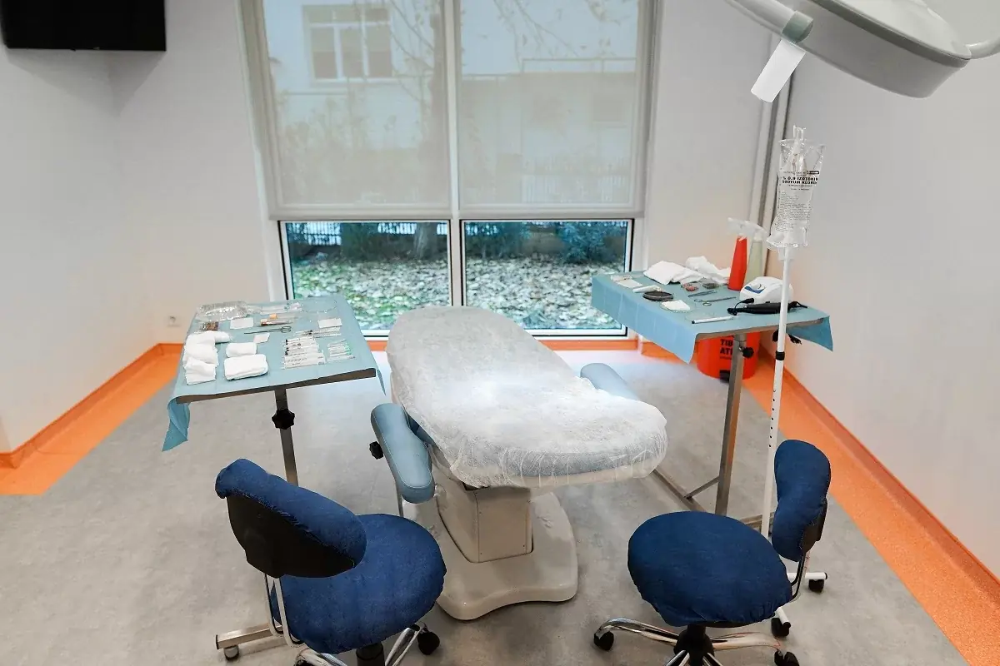
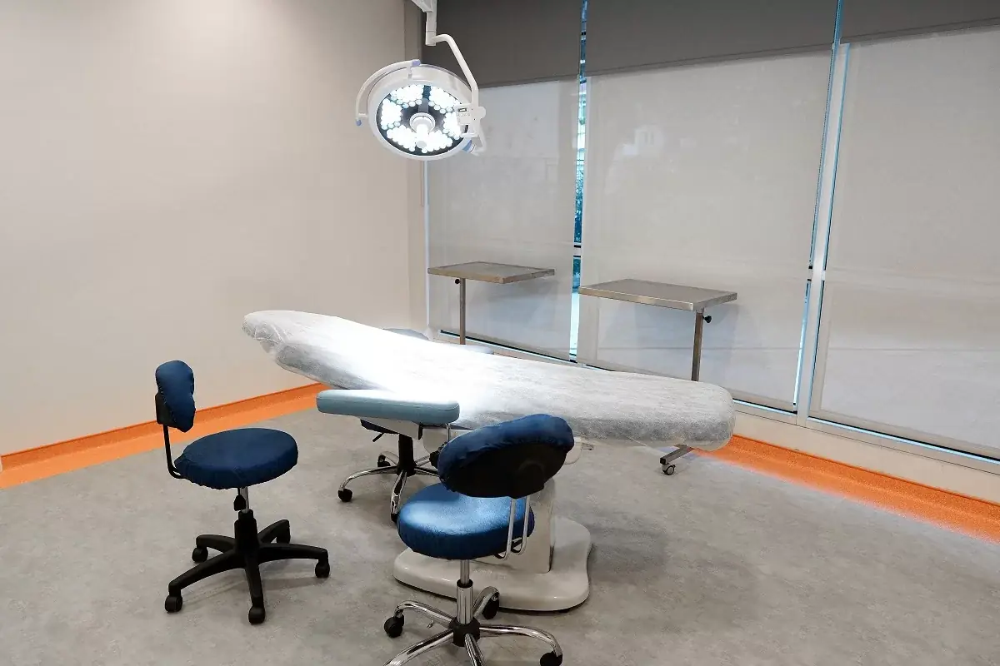
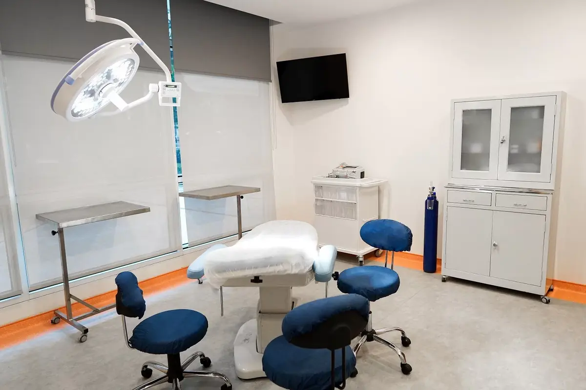
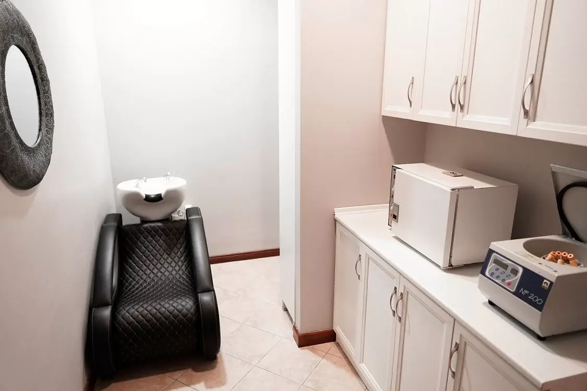
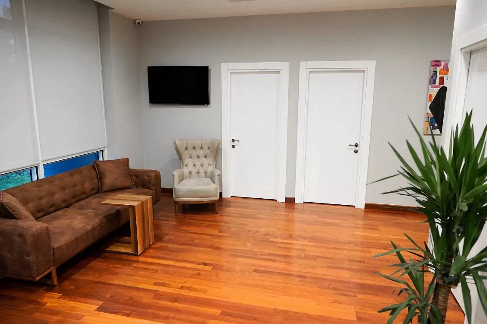
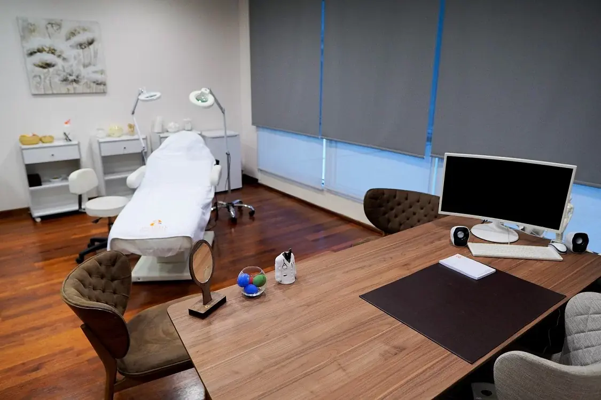

aplus Hairtransplant
Hakkımızda
Biz Kimiz?
aplus Hairtransplant, 2004 yılından beri İstanbul'un Erenköy semtinde hizmet vermektedir. Açılışından bu yana kendini her gün yenilemeyi misyon edinen ekibi ve ilkelerine dayalı çalışma prensibiyle yoluna kararlılıkla devam etmektedir. Hijyenik saç ekim odalarında, doktor kontrolünde, uzman saç ekim personeliyle saç ekimi konusunda profesyonelleşmiştir.
Misyonumuz
Bize gelen tüm hasta ve hasta yakınlarını gerekli bilgilerle aydınlatmak, hasta güvenliğini en üst düzeyde sağlamak, hizmetlerimizde çağdaş, modern ve güncel yöntemleri kullanmaktır.
Hedefimiz
Görevini iyi ve doğru şekilde yapabilecek bilgi ve tecrübeye sahip personelle hizmet vererek hasta ve hasta yakınlarının, dolayısıyla tüm toplumun sağlık eğitimine katkıda bulunmaktır.
Toplam kalite yönetiminden ödün vermeden, sürekli meslek içi eğitimle kendini yenileyen ekibimiz, gelişmiş teknolojik ekipmanlarımız ve uzman kadromuzla estetik ve saç ekimi alanında kaliteli sağlık hizmeti sunuyoruz.
Doktorlarımız
Kliniğimiz







